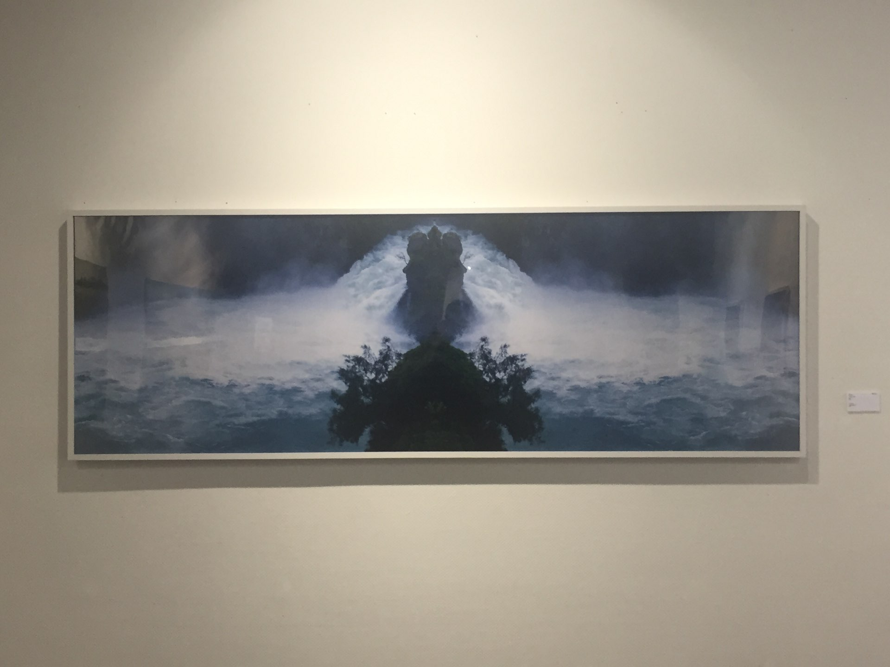
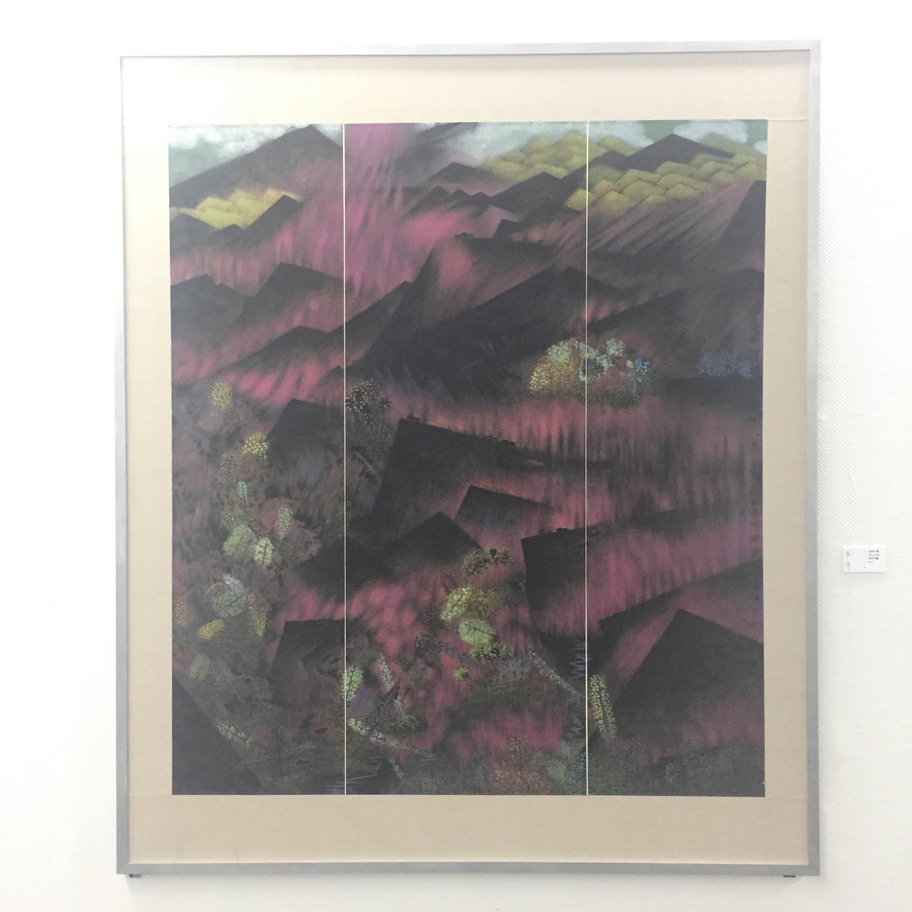
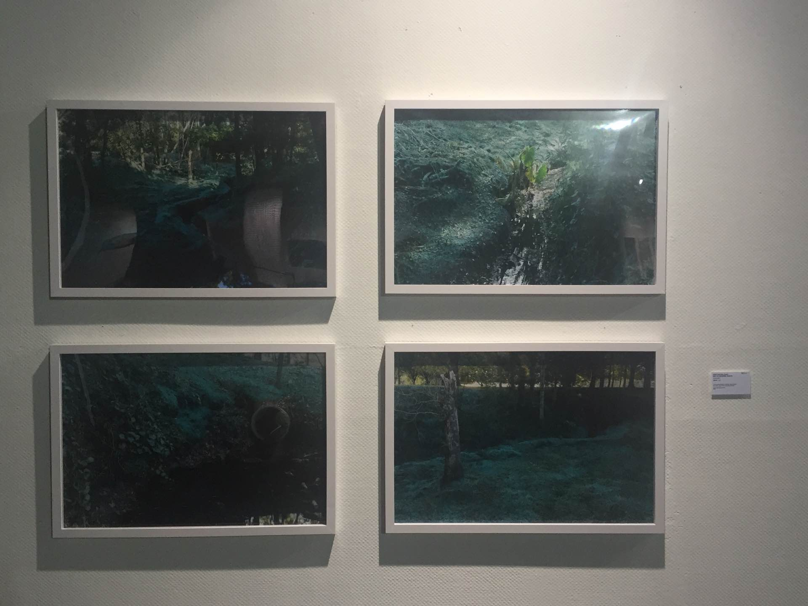
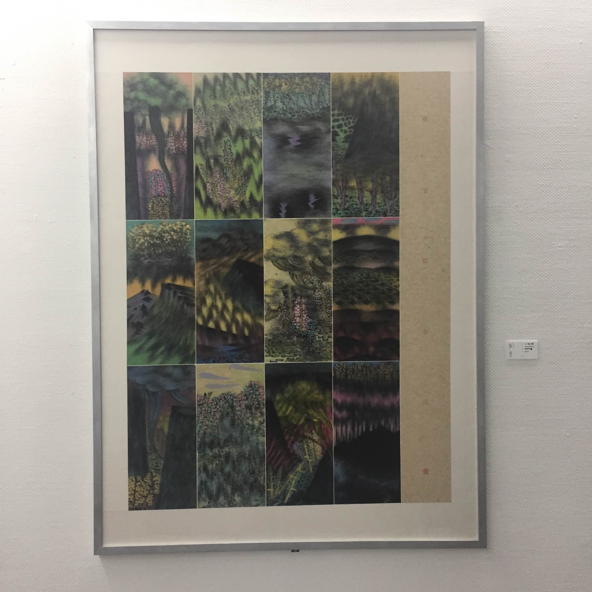
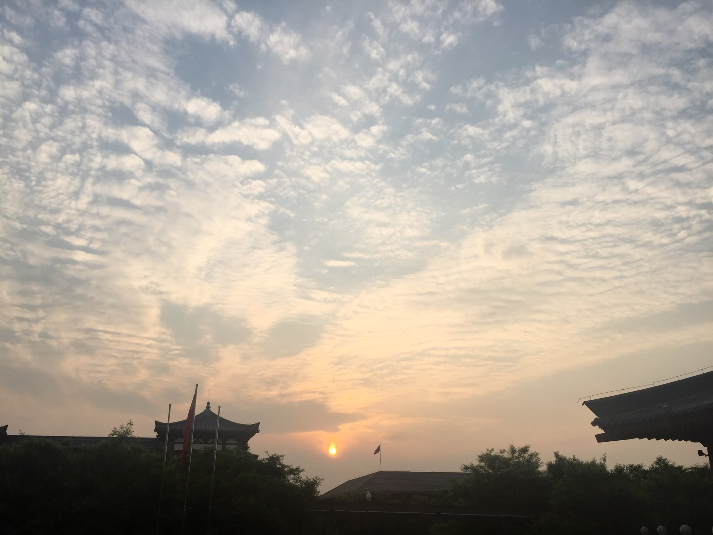

博客的第一篇文章
对于一个工科生来说，可能常常需要用些文学性东西武装一下自己，防止自己丧失一些语言能力。最近用hexo新搭建了本博客，搭建完之后沉寂了几天，惭愧地发现不知道应该写点什么。思来想去，翻了翻相册，写了这篇杂记作为第一篇博客吧。
某天天气正好
那天放假，许多人利用小长假回家或者出去玩了，不知道该去哪里的我打开了地图，漫无目的地想找一个目的地。
说来奇怪，很多时候你经常路过的地方总是在你看见它的时候才会想起来要进去，但是这样的想法往往一闪而过，被你其他的事情所打断。美术馆是我经过路过的地方，好奇地我每次都想进去看看，却着急地每次都没记住开放时间。不过还好有搜索引擎，确定了地点和开放时间，骑着自行车奔向了这个地方。
初见美术馆
在进入美术馆之前，莫名其妙地紧张起来。的确，作为一个从没去过的并且是不了解的地方，你都会紧张。这是就需要你的气场来支撑你，也就是常说的装“X”模式。

小白式观看
当天下午只开放了两个馆，第一个馆名称忘了，应该是抽象现代画Gallery，里面很多画都是特别抽象的，说真的我只能看懂色彩。

第二个馆是自然馆，主题色分为两个：绿色和红色。红色应该是暖色调，但是有张画看起来并不是那么暖。

绿色系的话看起来仍然是令人心旷神怡的感觉，心旷神怡的感觉，我说不上来，只是没了烦恼。


收拾好心情
去美术馆的时候距离闭馆时间已经很晚了，看完也没有坐长久的逗留。当出门的那一瞬间，夕阳西下，令人心情愉悦。
